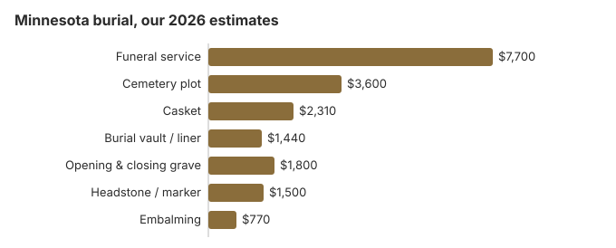

Burial Costs in Minnesota (2026)
On our estimates a Minnesota burial costs $17,350 to $21,850 once the cemetery's own charges are added. The funeral home's service is the largest part at about $7,700, the plot is about $3,600, and the casket, vault, grave opening and marker make up the rest. This page prices each item, sets out Minnesota's 14-day disposition rule, and explains county burial help and the five veterans cemeteries open to Minnesota families.
Minnesota Burial Charges, One Line at a Time
| Burial item | Minnesota estimate | Range seen |
|---|---|---|
| Funeral service | $7,700 | $5,775 – $10,010 |
| Cemetery plot | $3,600 | $1,800 – $7,200 |
| Casket | $2,310 | $770 – $6,160 |
| Burial vault / liner | $1,440 | $800 – $10,000 |
| Opening & closing grave | $1,800 | $500 – $3,000 |
| Headstone / marker | $1,500 | $500 – $5,000+ |
| Embalming | $770 | $500 – $1,500 |
About the Minnesota numbers: they come from our price model rather than calls to Minnesota funeral homes or cemeteries, so use them to judge quotes, not as a quote or professional advice. See our method for how they are built, and the disclaimer.

Counting the cemetery's fees as well as the funeral home's, a Minnesota burial usually comes to between $17,350 and $21,850, with the family's choices deciding where in that range it falls.
Burial Choices for Minnesota Families
- Green burial. The body is not embalmed, the container is biodegradable and there is usually no vault; ask each Minnesota cemetery whether it has ground set aside for this. Learn about green burial
Bringing Down a Minnesota Burial Bill
Where a Minnesota family can usually save:
- Ask for separate prices, not a package. Federal rules require every Minnesota funeral home to give you an itemized General Price List, and comparing the individual lines shows where one home charges more than another.
- Ask the township or county. Many Minnesota townships, counties, churches and fraternal groups run small cemeteries that do little advertising, so the township clerk or county office is a good first call when pricing a plot.
- Work with independent funeral homes: Minnesota's independent, family-owned homes are still widespread, and their pricing generally stays nearer the NFDA national averages than chain locations. Timing drives some charges. Minn. Stat. §149A.94 requires burial or another disposition within 14 calendar days, and a body not buried within 72 hours must be embalmed, refrigerated or packed in dry ice, with refrigeration capped at 14 days and dry ice at four.
- Choose a direct burial. With no embalming, viewing or ceremony, the funeral home's charges fall to its basic services, transport and the grave-side committal, and the family can still hold a memorial elsewhere.
- Weigh green burial too. Leaving out embalming and a vault, where the cemetery allows it, takes several line items off the $7,700 service estimate and the cemetery bill.
Comparing Minnesota Funeral Homes
Two or three phone calls are usually enough. Minnesota funeral homes must quote prices over the phone under the FTC Funeral Rule, so ask each for its basic services fee, direct burial price and casket range, and compare those before visiting.
Burial Resources
- Funeral Consumers AllianceNonprofit consumer advocacy for funeral pricing
- Headstone & Monument GuideCosts, types, and buying tips
- Green Burial OptionsEco-friendly and natural alternatives
- Best Online Casket RetailersCaskets bought online often cost less
- Best Burial InsuranceCompare plans to cover burial expenses
Compare Funeral Costs
- Average Funeral Cost in 2026National cost breakdown with real prices
- Cremation vs. Burial Cost ComparisonSide-by-side price comparison to help you decide
- Funeral Cost BreakdownEvery line item explained: know what you're paying for
- Cheapest Funeral OptionsLower-cost alternatives, with typical price ranges
- Direct Cremation: Most Affordable OptionNFDA 2023 median $2,645 with a family-supplied container (latest available)
- How to Compare Funeral PricesStep-by-step guide to getting the best price
A casket or headstone does not have to come from the funeral home or cemetery. Check our online casket retailer guide and headstone cost guide before buying, and the payment assistance guide if Minnesota costs are hard to meet.
Frequently Asked Questions
How much does a burial cost in Minnesota?
Our estimate for a Minnesota burial is $17,350 to $21,850. The funeral service is about $7,700 and the plot about $3,600; a casket adds around $2,310, a vault $1,440, opening and closing $1,800, and a headstone $500-$5,000.
Does a Minnesota cemetery require a vault?
State law does not require one, but most Minnesota cemeteries ask for a vault or a cheaper grave liner so the ground stays level; our table puts it at $1,440. Vault prices nationally span roughly $800 to $10,000, so get the cemetery's written rule on which container it accepts before you buy.
What is the least expensive way to bury someone in Minnesota?
Direct burial, with no embalming, viewing or service at the funeral home, is normally the cheapest burial on a Minnesota price list. You can also supply a casket bought elsewhere, and the FTC Funeral Rule bars a handling fee for it. For an eligible veteran, a national cemetery provides the grave, opening and closing and headstone free.
How do I find and compare Minnesota cemeteries?
Start with the county and township offices, which can list the smaller public, church and fraternal cemeteries nearby. Then ask each one, commercial memorial parks included, to put its grave, interment and marker charges in writing.
What goes on top of the Minnesota estimate?
Add the funeral home's cash advance items, the things it buys on the family's behalf at cost, such as extra death certificates, a newspaper notice and flowers. Minnesota also requires burial or other disposition within 14 days (Minn. Stat. § 149A.94), so any delay that needs extra refrigeration can add to the bill.
Can I arrange a green burial in Minnesota?
Some Minnesota cemeteries allow it and others do not, so call before you plan on it. Our green burial guide covers the embalming and vault questions to raise. Minnesota law does not require embalming if the body is refrigerated or buried within 72 hours (Minn. Stat. § 149A.94).
More for Minnesota
Starting a family cemetery on private land in Minnesota
Minnesota lets a private person set up a cemetery on their own land, but it has to be done formally. The land must be surveyed and platted, a stone or other monument must mark one corner, and the surveyor certifies the plat. The plat is then recorded with the county recorder, showing the cemetery's area and location (Minn. Stat. § 307.01; checked October 29, 2026).
That adds a surveyor's bill and a recording fee to the cost of a family burial ground, on top of anything the township or county requires for zoning. Families thinking about burial on a farm or other rural land can ask a local surveyor for a quote before deciding against a cemetery plot.
Who regulates a Minnesota burial, and where help comes from
Funeral homes in Minnesota are licensed by the Minnesota Department of Health, Health Regulation Division (651-201-4200), which is the place to check a license or report a funeral home. A cemetery may answer to a different office, so ask the department which one covers yours.
Minnesota does not appear on the Funeral Consumers Alliance list of nine states that require a funeral director, so a family may handle a burial itself. It still needs the disposition permit, and the cemetery's own rules on the grave, vault and marker apply.
The timing rules come from Minn. Stat. § 149A.94: burial or another disposition within 14 days, and embalming, refrigeration or dry ice if burial will not happen within 72 hours. Should the family choose cremation instead, there is no waiting period, only the permit (Minn. Stat. § 149A.95, subd. 6a).
County help with the cost
When someone dies without the means to pay, the county must cover the burial under Minn. Stat. § 261.035. Each county sets its own amount and its own approved providers, so call the county human-services office before buying a plot. Social Security's $255 death payment goes to a qualifying spouse or child who applies within two years, not to the funeral home.
Veterans
A qualifying veteran's grave, opening and closing, liner and headstone cost nothing in a national cemetery. Fort Snelling National Cemetery (612-726-1127) is the only national cemetery in Minnesota. The state runs four veterans cemeteries of its own, at Duluth (218-520-0120), Little Falls (320-616-2527), Preston (507-765-7320) and Redwood Falls (507-709-4390), and the Leech Lake Band operates a tribal veterans cemetery at Cass Lake (218-335-4463) (source: VA National Cemetery Administration).
Minnesota burial steps
- Ask the cemetery to price the grave, its opening, the liner and the marker; a Minnesota funeral home's quote rarely covers them.
- Ask about its rules on grave opening times, vaults and markers.
- If no one can pay, ask the county human-services office for its burial amount first.
- For a veteran, have the DD214 discharge record ready and ask Fort Snelling what else it needs.
- Report a funeral home that misstates burial prices to the Department of Health at 651-201-4200.